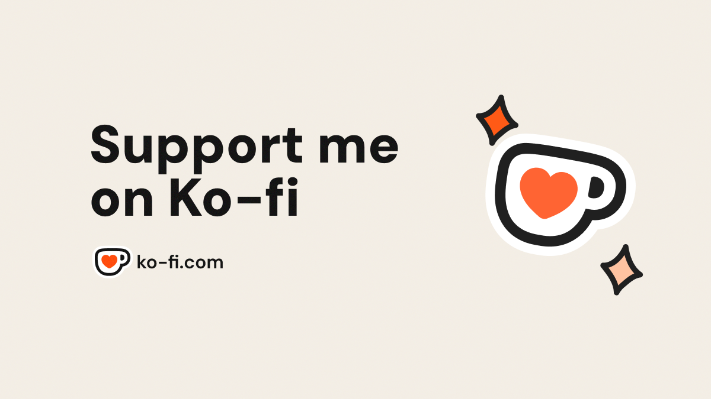

Why Support Helps
Every contribution supports development time, signing and release work, testing across macOS versions, and the care needed for a safe cleanup app.
AppTidy is built as a focused Mac utility: local-first, review-first, and made to stay straightforward. Support helps keep that work moving.

Ko-fi handles checkout for AppTidy support. AppTidy does not collect payment details, and the app remains free to download and use.
Every contribution supports development time, signing and release work, testing across macOS versions, and the care needed for a safe cleanup app.
AppTidy does not need a cloud account for the core uninstall flow. Support from users helps keep the app simple, private, and useful.
Ko-fi handles the tip checkout separately from AppTidy. AppTidy does not collect payment details or require a tip to download and use the app.
Using the app, sharing it with another Mac user, and sending thoughtful feedback all help. A tip is simply an extra way to support the developer directly.